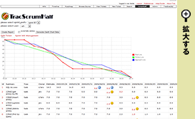
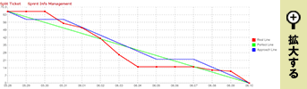
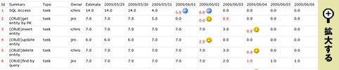
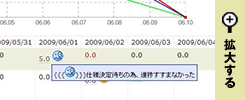

TracScrumHalf（トラックスクラムハーフ）は、アジャイル開発手法の一つであるScrumをサポートする為のツールです。
Tracというオープンソースのバグ管理システムのプラグインとして開発されています。
スクリーンショット
機能
▼バーンダウンチャート
タスクの残作業量推移を表すグラフを表示します。チームの進捗が一目で分かります。
▼スプリントバックログ
各タスクの日毎の残作業量推移を表すテーブルを表示します。
▼ニコニコカレンダー
チームメンバーがタスクチケットのコメントに顔文字を記述することで、スプリントバックログにフェースマークアイコンが表示されます。
これによりメンバーの心理状態を把握することができます。
アイコンをマウスオーバーするとコメント全体がバルーン表示されます。
▼その他の機能
- タスクチケット分割
- ガントチャート出力